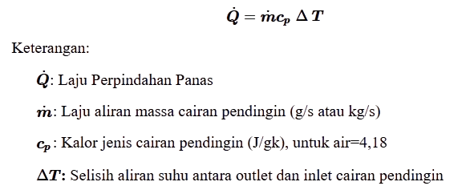
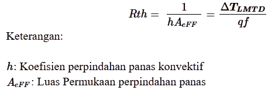

Latar Belakang
Kesulitan dalam mengelola panas CPU menjadi lebih rumit, karena komponen elektronik menjadi lebih kecil dan lebih canggih. Karena keterbatasan kapasitas perpindahan panas dan efisiensi ruang, sistem pendingin udara konvensional mulai kehilangan sebagian efektivitasnya. Meskipun pendingin cair telah terbukti lebih efektif, masih ada masalah dengan efisiensi sistem, konfigurasi fluida kerja, dan kemungkinan kegagalan atau kebocoran sistem, dalam sistem pendingin immersion single-phase, serta meningkatkan kecepatan aliran pendingin cair dapat meningkatkan distribusi panas dan menurunkan suhu CPU secara drastis (Cheng et al. 2020). Jika dibandingkan dengan pendingin udara, sistem pendingin imersi dua fase dapat meningkatkan performa CPU sebesar 51% (Ramakrishnan dkk. 2021).
Pengertian Heat Exchanger
Heat exchanger merupakan perangkat yang digunakan untuk mentransfer panas antara 2 fluida atau lebih, yang memiliki temperature yang berbeda. Dalam sistem cooling liquid PC, heat exchanger berperan untuk menjaga suhu optimal komponen seperti CPU dan GPU.
Rumus yang digunakan
Heat exchanger merupakan perangkat yang digunakan untuk mentransfer panas antara 2 fluida atau lebih, yang memiliki temperature yang berbeda. Dalam sistem cooling liquid PC, heat exchanger berperan untuk menjaga suhu optimal komponen seperti CPU dan GPU.
-
Perpindahan panas oleh fluida dingin
 -
Perhitungan selisih suhu
-
Kalor yang diserap fluida
-
Selisih suhu rata-rata logaritma
-
Koefisien perpindahan panas konvektif
-
Hambatan termal konvektif
